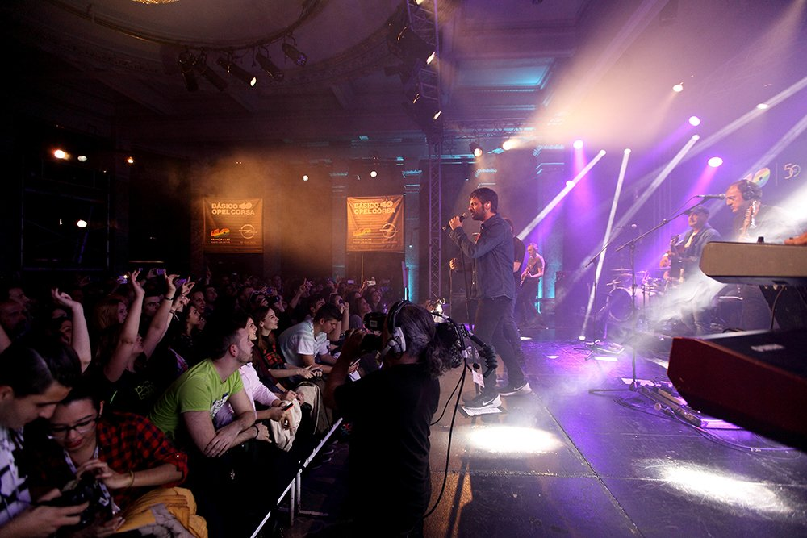

Estopa sigue repartiendo canciones #Desdecasaconmúsica y estrena el videoclip de “Despertar”
Bajo ese hashtag llega un nuevo vídeo grabado en confinamiento y compartido con todos desde este 5 de
mayo. El tema es Despertar, otra de las canciones incluidas en Fuego, su último trabajo. Como
hicieron con el reciente clip de Corazón sin salida, los hermanos Muñoz y el resto de la banda
participan con sus instrumentos desde sus respectivos domicilios para redondear una generosa dosis
de buena onda a pesar del encierro.
Despertar es uno de los 12 temas incluidos en ese Fuego lanzado en octubre, un álbum inspirado,
poderoso y luminoso que destila variedad musical y rítmica. Con sus crónicas tan personales como
costumbristas, los de Cornellá exhiben el bagaje de quien creció cantando a Camarón, se contagió del
heavy-rock de Extremoduro y se apuntó a la corriente arrabalera del hip-hop. El álbum, con el que
celebran 20 años de carrera, entró directamente en el número 1 en ventas,
En sus primeros compases, Despertar podría ser una canción de Enrique Urquijo o Antonio Vega, pero
el suave pop del arranque deriva rumba y rock cuando la canción explota. Se convierte así en un tema
trepidante con el sello Estopa, ese que les mantiene naturales, sin fisuras y sin disimulos. Y sin
esconder sus sentimientos, aunque padezcan como todos los rigores del encierro. Los combaten
#Desdecasaconmúsica, y qué mejor manera.
Estopa estrena el videoclip de “Corazón sin salida”
El confinamiento no es excusa para que Estopa detenga su inagotable actividad. Hoy lanzan el vídeo de
Corazón sin salida, el nuevo single de Fuego, último trabajo de los hermanos Muñoz. Sin necesidad de
salir de sus casas, nos brindan un clip alegre y colorista dirigido por Fran Gas y en el que todos
los músicos participan en directo desde su lugar de encierro.
Lanzado el pasado octubre, Fuego es, sin duda, el disco más rico y variado musical y rítmicamente de
Estopa, un álbum inspirado, poderoso y luminoso. Los de Cornellá exhiben el bagaje de quien creció
cantando a Camarón, Los Chunguitos, Serrat o Sabina, y a la vez se contagió del heavy-rock de
Extremoduro y compañía o de la corriente rapera del hip-hop más arrabalero.
Corazón sin salida destila la misma frescura, ingenio, lirismo, imaginación, humor y desparpajo que
caracterizan al grupo desde sus primeras canciones. Es la línea maestra de un álbum con el que
celebran 20 años de carrera, una trayectoria en la que han logrado el difícil equilibrio entre la
fidelidad a un estilo y su disposición a romper sus propias reglas.
En Fuego, David y José alegran la vida, mueven nuestras caderas y nos hacen arrancar por palmas,
algo que llevan haciendo desde sus orígenes. Se mantienen naturales, cachondos, sin fisuras, sin
disimulos, sin esconder sus sentimientos ni en sus canciones ni en sus entrevistas. Alegres sí, pero
también melancólicos y tiernos…
Y a prueba de confinamientos, como demuestran en este Corazón sin salida en el que no hay lugar para
el pesimismo.
¡Ya disponible “Yo no estoy loco”, nuevo adelanto de “Fuego”!
Fuego, el nuevo álbum que saldrá a la venta el próximo 18 de Octubre, llega con una edición especial
para CD, limitada solo para los fans que reserven antes del lanzamiento.
Esta edición exclusiva para reservas incluye un segundo CD con VERSIONES MAQUETA E INSTRUMENTALES de
algunas de las canciones del nuevo trabajo.
¡Reserva a partir de hoy mismo y hasta un día antes del lanzamiento!
Una píldora de rock. Así es el tercer adelanto que Estopa presentan de su próximo álbum Fuego. La
nueva pieza que encajará en este inminente trabajo se llama Yo no estoy loco y es un tema
trepidante, que deja a un lado la vena más rumbera del dúo de Cornellá para exponer su perfil más
eléctrico y agitador. La canción se estrena este viernes 6 de septiembre, y llega acompañada de un
lyric video en clave de manga.